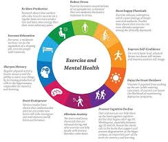

What is Mental Health?

The term "mental health" describes our social, psychological, and emotional well-being. It impacts our everyday thoughts, emotions, and behaviors; it also affects how we manage stress, interact with people, and make decisions.
Key point: Having the resources, support, and fortitude to lead a purposeful life is what defines mental health, not simply the lack of mental disease.
Why It Matters
- Affects school or work productivity
- Builds confidence and self-worth
- Encourages resiliency under pressure
Causes & Risk Factors
- Biological: Genetics, brain chemistry
- Psychological: Trauma, coping skills
- Environmental: Stress, poverty, isolation
- Substance use: Alcohol, drugs

Treatment Options
-
Psychotherapy (CBT, DBT, trauma-focused)
- Medication (antidepressants, mood stabilizers)
- Lifestyle: Exercise, nutrition, sleep
- Support groups
- Mindfulness, meditation, art therapy
Prevention & Self-Care
- Maintain social connections
- Manage stress healthily
- Exercise regularly
- Eat balanced meals, hydrate, sleep well
- Seek help early
Myths vs. Facts
| Myth | Fact |
|---|---|
| Mental illness is rare | 1 in 4 people experience it in their lifetime |
| You can snap out of it | It's a medical condition needing support |
| Therapy is for "crazy" people | It helps anyone improve mental health |
| Seeking help is weakness | It's a sign of strength |
Crisis & Support Resources
South Africa: SADAG Suicide Crisis Line: 0800 567 567 | SMS 31393
Global: US: 988 | UK: Samaritans 116 123 | Australia: Lifeline 13 11 14
Video Help
Here are some helpful YouTube videos on mental health awareness, coping strategies, and recovery stories: